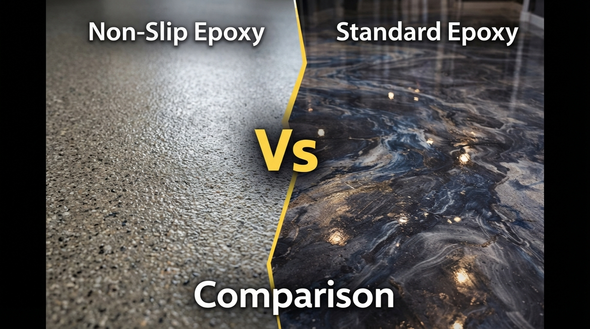

Slip-and-fall accidents are the leading cause of emergency room visits in both homes and workplaces. A non-slip epoxy coating is one of the most effective and affordable ways to prevent them — while still giving you a beautiful, professional-looking floor. Here's everything you need to know to make the right choice.
Why Standard Epoxy Can Be Slippery
Freshly installed high-gloss epoxy looks stunning, but its very smoothness can create a hazard when wet. The coefficient of friction on a standard polished epoxy surface can drop significantly when water, oil, or soap is present. This is especially critical in:
- Garage floors (oil drips, rain tracked in)
- Pool decks and surrounding areas
- Restaurant kitchens and commercial kitchens
- Bathrooms and laundry rooms
- Entryways and lobbies
- Industrial and manufacturing facilities
Anti-Slip Solutions We Use
1. Aluminum Oxide Additive
The most common and durable option. Tiny aluminum oxide particles (sharp, angular, extremely hard) are broadcast into the wet topcoat and sealed over. The result is a textured surface that grips shoes even when wet. This is our recommendation for garages, commercial floors, and outdoor areas.
Pros: Extremely durable, maintains grip over years, virtually invisible from a distance
Cons: Slightly harder to mop (grit catches debris) — use a stiff-bristle broom first
2. Silica Sand Broadcast
A heavier texture than aluminum oxide, silica sand creates a more pronounced grip profile. Used in high-risk industrial environments, loading docks, and commercial kitchens. Very cost-effective.
3. Vinyl Flake System
A full vinyl flake broadcast (common in garage floors) naturally creates a textured surface that adds significant slip resistance. A polyaspartic topcoat over the flakes seals them while maintaining the grip.
4. Shark Grip and Proprietary Additives
For decorative floors where you want to preserve the appearance — like metallic epoxy or polished concrete — fine-grade slip-resistant additives can be mixed directly into the topcoat, providing grip without significantly affecting the visual finish.
Understanding Slip Resistance Ratings
Floors are rated by their Slip Resistance (SR) or Pendulum Test Value (PTV). Here's a quick guide:
- PTV 0–24: High slip risk — not acceptable for any commercial area
- PTV 25–35: Moderate risk — only acceptable for dry indoor areas with no public access
- PTV 36–64: Low risk — suitable for most commercial and residential floors
- PTV 65+: Extremely low risk — recommended for pool decks, wet areas, and high-risk commercial environments
Our standard residential garage with aluminum oxide grit typically achieves PTV 50–65. Our commercial and pool deck systems achieve PTV 65+.
How We Customize for Your Space
There's no one-size-fits-all. We assess foot traffic volume, likely wet conditions, the presence of elderly or mobility-impaired users, and aesthetic preferences before recommending a specific anti-slip system. A medical office has different needs than a car workshop — and we match the solution to the space.
Ready to Transform Your Space?
Contact Ale Floors today for a free consultation and quote.
Request Free Quote